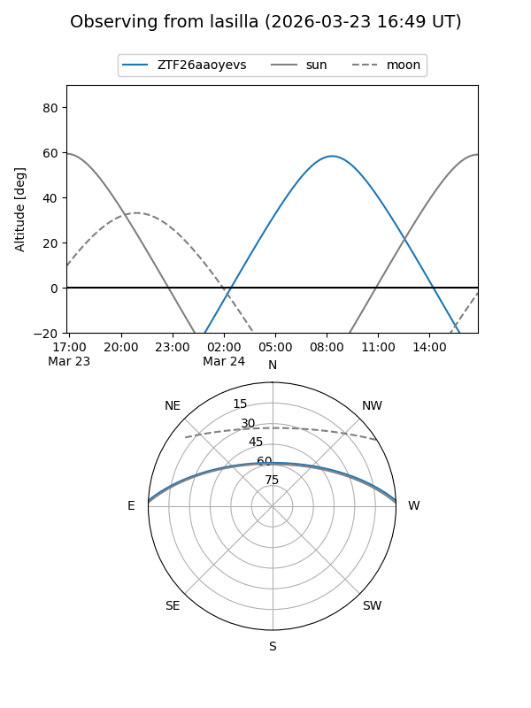
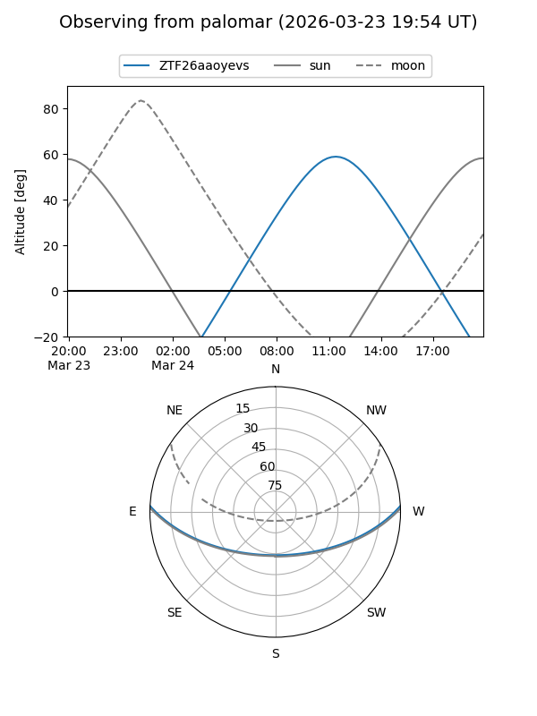

ZTF26aaoyevs
Target ZTF26aaoyevs at 2026-03-23 12:39
Aliases and brokers:
FINK: link
Lasair: link
ALeRCE: link
alt names
ZTF26aaoyevs (ztf,fink_ztf)
Coordinates:
equatorial (ra, dec) = 235.6062,+2.39510
equatorial (HMS+DMS) = 15:42:25.50,+02:23:42.36
galactic (l, b) = (9.2548,+42.22604)
Flags:
Photometry:
last ztfg=18.84
1 ztfg detections
Lightcurve
Visibility


Additional plots